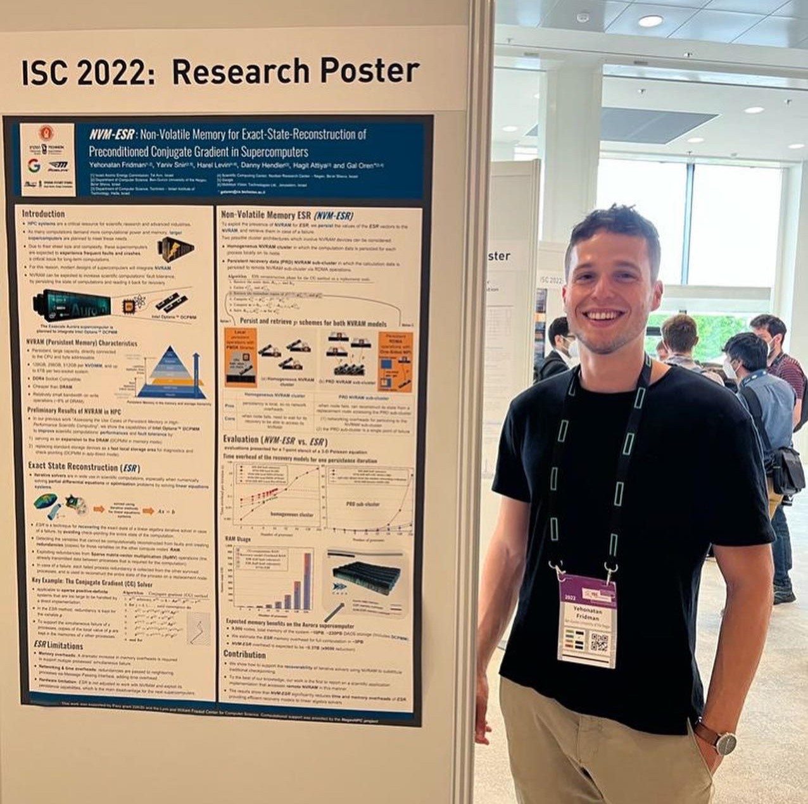

About
I am a Researcher and Algorithms Developer at the Israel Atomic Energy Commission (since 2019), as well as a Ph.D. student in the Computer Science Department at Ben-Gurion University. My primary interests lie in the fields of High-Performance Computing, Parallel and Distributed Computing, Algorithms, Artificial Intelligence, Computer Vision, and Image Processing. Spinning is my favorite exercise!
Education
Ph.D. Student in Computer Science, Ben-Gurion University, (2023-present)
Fields:
Distributed Computing, Recoverable Data Structures, Persistent Memory, Emerging TechnologiesSupervisors:
Prof. Danny Hendler, Prof. Hagit Attiya, Dr. Gal OrenM.Sc. in Computer Science, Ben-Gurion University, (2019-2023)
Thesis:
Recoverable Algorithms in HPC Systems Using NVRAM TechnologySupervisors:
Prof. Danny Hendler, Prof. Hagit Attiya, Dr. Gal OrenB.Sc. in Computer Science and Mathematics, Tel Aviv University, Israel, (2016-2019)
* graduation with distinction
Publications
Y. Fridman, Y. Goren, G. Oren. "From OpenACC to OpenMP5 GPU Offloading: Performance Evaluation on NAS Parallel Benchmarks", Proceedings of the 2025 4th International Workshop on Extreme Heterogeneity Solutions, 2025.
Y. Fridman, G. Tamir, U. Steinitz, G. Oren. "Distributed OpenMP Offloading of OpenMC on Intel GPU MAX Accelerators", arXiv preprint arXiv:2403.02735, 2024.
Y. Fridman. "A Random‑Player Game and Derangement Numbers", arXiv preprint arXiv:2402.10246, 2024.
D. Goldberger, Y. Fridman, E. Gull, E. Eidelstein, G. Cohen. "Dynamical Mean Field Theory of the Bilayer Hubbard Model with Inchworm Monte Carlo", Physical Review B 109.8 (2024): 085133.
Y. Fridman, S. Mutalik Desai, N. Singh, T. Willhalm, G. Oren. "CXL Memory as Persistent Memory for Disaggregated HPC: A Practical Approach", Proceedings of the SC'23 Workshops of The International Conference on High Performance Computing, Networking, Storage, and Analysis, 2023.
Y. Fridman, G. Tamir, G. Oren. "Portability and Scalability of OpenMP Offloading on State‑of‑the‑Art Accelerators", International Conference on High Performance Computing. Cham: Springer Nature Switzerland, 2023.
Y. Fridman, Y. Snir, H. Levin, D. Hendler, H. Attiya, G. Oren. "Recovery of Distributed Iterative Solvers for Linear Systems Using Non‑Volatile RAM", 2022 IEEE/ACM 12th Workshop on Fault Tolerance for HPC at eXtreme Scale (FTXS). IEEE, 2022.
Y. Fridman, Y. Snir, H. Levin, D. Hendler, H. Attiya, G. Oren. "NVM‑ESR: Using Non‑Volatile Memory in Exact State Reconstruction of Preconditioned Conjugate Gradient", 2022.
Y. Fridman, R. Harel, G. Oren. "The Case for Non‑Volatile RAM in Cloud HPCaaS", arXiv preprint arXiv:2208.02240, 2022.
Y. Fridman, M. Rusanovsky, G. Oren. "ChangeChip: A Reference‑Based Unsupervised Change Detection for PCB Defect Detection", 2021 IEEE Physical Assurance and Inspection of Electronics (PAINE). IEEE, 2021.
Y. Fridman, Y. Snir, M. Rusanovsky, K. Zvi, H. Levin, D. Hendler, H. Attiya, G. Oren. "Assessing the Use Cases of Persistent Memory in High‑Performance Scientific Computing", 2021 IEEE/ACM 11th Workshop on Fault Tolerance for HPC at eXtreme Scale (FTXS). IEEE, 2021.
R. Harel, M. Rusanovsky, Y. Fridman, A. Shimony, G. Oren. "Complete Deep Computer‑Vision Methodology for Investigating Hydrodynamic Instabilities", International Conference on High Performance Computing. Cham: Springer International Publishing, 2020.
Awards
Pazy Award for excellent research funded by the Pazy Foundation, 2023.
IEEE TCHPC Travel Award for attending the SC Conference, Dallas, Texas, 2022.
Grant of excellence for academic achievements on behalf of the School of Computer Science, Tel‐Aviv University, 2019.
"Club‐100" grant of excellence for academic achievements, IDF, 2019.
Gallery
International Workshop on Extreme Heterogeneity Solutions, PPoPP25, Las Vegas (March 2025)

IXPUG Workshop, SC22, Dallas (November 2022)
ISC22, Hamburg (May 2022)
Grant of excellence, Tel Aviv University (2019)


yehonatan123f@gmail.com
fridyeh@post.bgu.ac.il